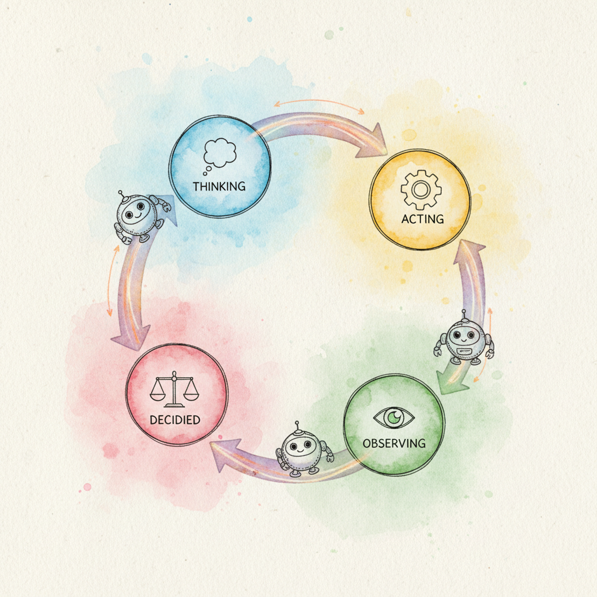

LangGraph: Stateful Agent Workflows is a library for building stateful, multi-step agent applications as directed graphs. Unlike simple chain-based orchestration, LangGraph: Stateful Agent Workflows models agent workflows as nodes (functions) connected by edges (transitions), with a shared state object that flows through the graph. This architecture naturally supports cycles, conditional branching, parallel execution, and human-in-the-loop interrupts.
Built on top of LangChain primitives, LangGraph: Stateful Agent Workflows adds the state management layer that pure LCEL chains lack. Key features include typed state schemas (via TypedDict or Pydantic), conditional edges for routing, checkpointing for persistence and recovery, and first-class support for subgraphs that enable multi-agent composition. The langgraph-platform package provides deployment tooling with built-in streaming, cron jobs, and a web-based studio for graph visualization.
This appendix targets developers building agent systems that need deterministic control flow, error recovery, and auditability. If your agent logic is a simple linear chain or a single tool-calling loop, LangChain alone may suffice. LangGraph: Stateful Agent Workflows becomes essential when your workflow includes branching decisions, retry logic, human approval gates, or multiple cooperating agents.
LangGraph: Stateful Agent Workflows implements the agent patterns described in Chapter 22 (AI Agents) and Chapter 23 (Tool Use). For multi-agent architectures using subgraphs, see Chapter 24 (Multi-Agent Systems). LangGraph: Stateful Agent Workflows builds on LangChain, so Appendix L covers the underlying model wrappers, prompt templates, and tool definitions that LangGraph: Stateful Agent Workflows nodes typically use.
You should first work through Chapter 22 (AI Agents) to understand the ReAct loop, tool calling, and agent design patterns that LangGraph: Stateful Agent Workflows implements at the graph level. Familiarity with Appendix L (LangChain) is strongly recommended, since LangGraph: Stateful Agent Workflows uses LangChain's model interfaces, tool abstractions, and message types throughout.
Choose LangGraph: Stateful Agent Workflows when your agent needs explicit control flow with conditional routing, when you require checkpointing so a long-running workflow can resume after failure, or when you want human-in-the-loop approval steps. It is the right tool for complex multi-step processes like research assistants, code generation pipelines, and customer service bots with escalation paths. For simpler single-agent tool loops, LangChain's built-in agent executor may be enough. For role-based multi-agent teams where you prefer a higher-level abstraction, consider Appendix N (CrewAI).